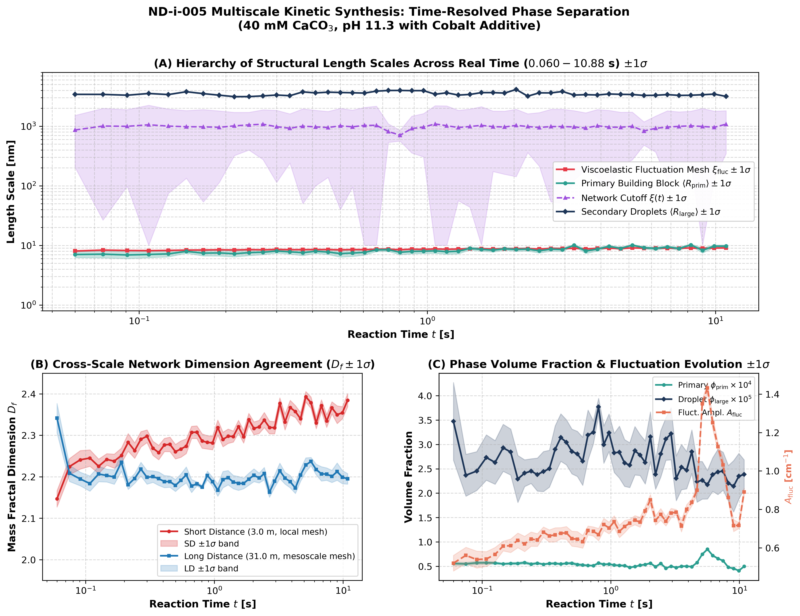
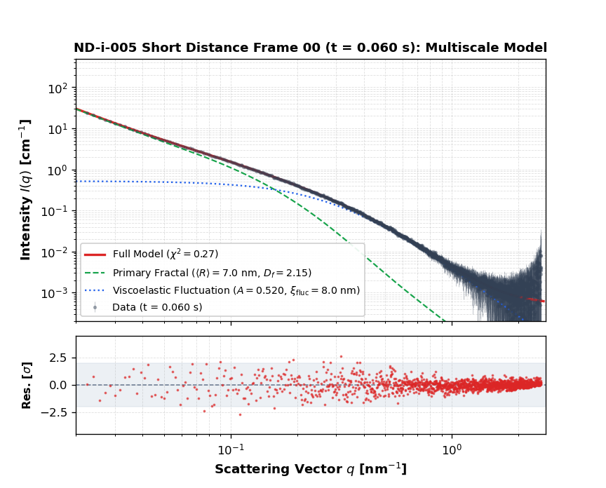
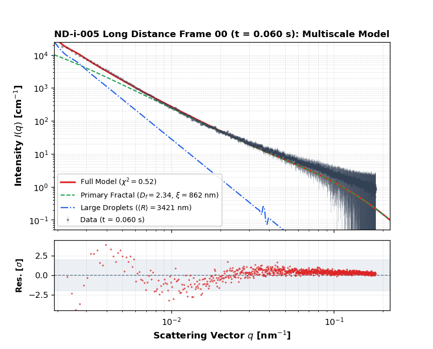

Stitched wide-angle scattering curve combining the final reaction stages across both cameras (q: 0.002 to 2.5 nm-1). Resolves primary amorphous building blocks, the mass fractal network, secondary droplets, and sub-nanometer clusters.

| Primary Core Radius ⟨Rprim⟩ | 5.50 ± 0.28 nm |
|---|---|
| Primary Core Dispersion σprim | 3.26 ± 0.07 nm |
| Mass Fractal Dimension Df | 2.149 ± 0.015 |
| Network Correlation Cutoff ξ | 26748 ± 933027 nm |
| Secondary Droplet Radius ⟨Rlarge⟩ | 3706 ± 183 nm |
| Secondary Droplet Dispersion σlarge | 589 ± 20 nm |
| Droplet Volume Fraction φlarge | 2.26 ± 0.17 × 10-5 |
| Fluctuation Correlation Length ξfluc | 8.04 ± 0.00 nm |
| Fluctuation Amplitude Afluc | 0.7878 ± 0.0048 cm-1 |
| Incoherent Flat Background | 0.000139 ± 0.000021 cm-1 |
| Overall Baseline Fit Quality χ2red | 6.049 |
Cross-scale synchronization demonstrating consistent structural length scale hierarchy across 4 decades, rigorous agreement between short-distance and long-distance fractal dimensions (Df ± 1σ), and coupled volume fraction evolution.


| Goodness of Fit χ2red | - |
|---|---|
| Primary Core ⟨Rprim⟩ | - |
| Core Dispersion σprim | - |
| Fractal Dimension Df | - |
| Primary Fraction φprim × 104 | - |
| Viscoelastic Fluct. Ampl. Afluc | - |
| Fluctuation Mesh ξfluc | - |
| Incoherent Bkg [cm-1] | - |

| Goodness of Fit χ2red | - |
|---|---|
| Droplet Radius ⟨Rlarge⟩ | - |
| Droplet Dispersion σlarge | - |
| Droplet Fraction φlarge × 105 | - |
| Fractal Dimension Df | - |
| Network Cutoff ξ | - |
| Primary Fraction φprim × 104 | - |
| Frame | Time [s] | χ2red | ⟨Rprim⟩ [nm] | σprim [nm] | Df | φprim × 104 | Afluc [cm-1] | ξfluc [nm] | Bkg [cm-1] |
|---|---|---|---|---|---|---|---|---|---|
| Frame 00 | 0.060 | 0.272 | 7.03 ± 0.78 | 3.56 ± 0.22 | 2.147 ± 0.020 | 0.56 ± 0.03 | 0.5199 ± 0.0406 | 8.04 ± 0.18 | 0.0005 ± 0.0000 |
| Frame 01 | 0.075 | 0.260 | 7.11 ± 0.94 | 3.80 ± 0.27 | 2.225 ± 0.019 | 0.55 ± 0.03 | 0.5603 ± 0.0422 | 8.33 ± 0.17 | 0.0005 ± 0.0000 |
| Frame 02 | 0.091 | 0.265 | 6.91 ± 0.93 | 3.67 ± 0.28 | 2.241 ± 0.022 | 0.57 ± 0.03 | 0.5386 ± 0.0440 | 8.20 ± 0.18 | 0.0005 ± 0.0000 |
| Frame 03 | 0.108 | 0.252 | 7.04 ± 0.83 | 3.72 ± 0.24 | 2.245 ± 0.020 | 0.57 ± 0.03 | 0.5416 ± 0.0384 | 8.16 ± 0.16 | 0.0004 ± 0.0000 |
| Frame 04 | 0.126 | 0.225 | 7.20 ± 0.78 | 3.79 ± 0.22 | 2.225 ± 0.017 | 0.57 ± 0.03 | 0.5654 ± 0.0363 | 8.23 ± 0.15 | 0.0005 ± 0.0000 |
| Frame 05 | 0.146 | 0.249 | 7.93 ± 0.52 | 3.97 ± 0.14 | 2.242 ± 0.014 | 0.55 ± 0.02 | 0.6091 ± 0.0253 | 8.33 ± 0.10 | 0.0004 ± 0.0000 |
| Frame 06 | 0.167 | 0.227 | 7.41 ± 0.75 | 3.89 ± 0.21 | 2.238 ± 0.017 | 0.56 ± 0.02 | 0.6107 ± 0.0351 | 8.38 ± 0.13 | 0.0004 ± 0.0000 |
| Frame 07 | 0.190 | 0.269 | 7.47 ± 0.83 | 3.96 ± 0.24 | 2.251 ± 0.018 | 0.56 ± 0.03 | 0.6386 ± 0.0380 | 8.45 ± 0.14 | 0.0005 ± 0.0000 |
| Frame 08 | 0.214 | 0.271 | 7.24 ± 0.82 | 3.84 ± 0.24 | 2.283 ± 0.021 | 0.57 ± 0.03 | 0.6200 ± 0.0396 | 8.37 ± 0.15 | 0.0004 ± 0.0000 |
| Frame 09 | 0.241 | 0.268 | 7.55 ± 0.81 | 3.98 ± 0.23 | 2.263 ± 0.019 | 0.54 ± 0.02 | 0.6453 ± 0.0370 | 8.50 ± 0.14 | 0.0004 ± 0.0000 |
| Frame 10 | 0.269 | 0.301 | 7.68 ± 0.69 | 3.98 ± 0.20 | 2.290 ± 0.018 | 0.56 ± 0.02 | 0.6405 ± 0.0329 | 8.42 ± 0.12 | 0.0004 ± 0.0000 |
| Frame 11 | 0.300 | 0.244 | 8.03 ± 0.60 | 4.16 ± 0.17 | 2.298 ± 0.015 | 0.54 ± 0.02 | 0.6814 ± 0.0270 | 8.56 ± 0.10 | 0.0004 ± 0.0000 |
| Frame 12 | 0.334 | 0.289 | 7.79 ± 0.66 | 4.01 ± 0.18 | 2.269 ± 0.017 | 0.56 ± 0.02 | 0.6616 ± 0.0317 | 8.46 ± 0.12 | 0.0004 ± 0.0000 |
| Frame 13 | 0.370 | 0.263 | 7.54 ± 0.80 | 4.00 ± 0.23 | 2.258 ± 0.017 | 0.56 ± 0.02 | 0.6674 ± 0.0366 | 8.49 ± 0.13 | 0.0004 ± 0.0000 |
| Frame 14 | 0.410 | 0.274 | 7.97 ± 0.62 | 4.10 ± 0.17 | 2.277 ± 0.016 | 0.55 ± 0.02 | 0.6758 ± 0.0291 | 8.51 ± 0.11 | 0.0004 ± 0.0000 |
| Frame 15 | 0.453 | 0.271 | 7.73 ± 0.69 | 4.02 ± 0.20 | 2.278 ± 0.017 | 0.56 ± 0.02 | 0.6775 ± 0.0332 | 8.51 ± 0.12 | 0.0004 ± 0.0000 |
| Frame 16 | 0.499 | 0.270 | 7.27 ± 0.90 | 3.95 ± 0.26 | 2.261 ± 0.017 | 0.56 ± 0.03 | 0.6474 ± 0.0387 | 8.43 ± 0.14 | 0.0004 ± 0.0000 |
| Frame 17 | 0.550 | 0.285 | 7.44 ± 0.91 | 3.98 ± 0.26 | 2.267 ± 0.020 | 0.54 ± 0.03 | 0.6447 ± 0.0399 | 8.51 ± 0.15 | 0.0004 ± 0.0000 |
| Frame 18 | 0.606 | 0.251 | 7.63 ± 0.76 | 4.02 ± 0.22 | 2.274 ± 0.018 | 0.53 ± 0.02 | 0.6313 ± 0.0330 | 8.48 ± 0.13 | 0.0004 ± 0.0000 |
| Frame 19 | 0.667 | 0.260 | 8.40 ± 0.52 | 4.26 ± 0.14 | 2.307 ± 0.015 | 0.52 ± 0.01 | 0.6902 ± 0.0231 | 8.61 ± 0.09 | 0.0004 ± 0.0000 |
| Frame 20 | 0.733 | 0.277 | 8.45 ± 0.53 | 4.25 ± 0.14 | 2.308 ± 0.015 | 0.51 ± 0.01 | 0.6852 ± 0.0237 | 8.62 ± 0.09 | 0.0004 ± 0.0000 |
| Frame 21 | 0.805 | 0.257 | 7.66 ± 0.68 | 4.00 ± 0.19 | 2.286 ± 0.017 | 0.56 ± 0.02 | 0.6689 ± 0.0320 | 8.45 ± 0.12 | 0.0004 ± 0.0000 |
| Frame 22 | 0.884 | 0.250 | 7.92 ± 0.72 | 4.18 ± 0.20 | 2.283 ± 0.016 | 0.54 ± 0.02 | 0.7214 ± 0.0316 | 8.64 ± 0.11 | 0.0004 ± 0.0000 |
| Frame 23 | 0.970 | 0.277 | 7.98 ± 0.66 | 4.13 ± 0.18 | 2.282 ± 0.016 | 0.54 ± 0.02 | 0.7033 ± 0.0303 | 8.56 ± 0.11 | 0.0004 ± 0.0000 |
| Frame 24 | 1.065 | 0.280 | 8.09 ± 0.71 | 4.25 ± 0.20 | 2.319 ± 0.018 | 0.52 ± 0.02 | 0.7355 ± 0.0309 | 8.72 ± 0.11 | 0.0004 ± 0.0000 |
| Frame 25 | 1.168 | 0.258 | 7.84 ± 0.76 | 4.14 ± 0.21 | 2.290 ± 0.017 | 0.52 ± 0.02 | 0.6854 ± 0.0320 | 8.61 ± 0.11 | 0.0003 ± 0.0000 |
| Frame 26 | 1.282 | 0.264 | 7.97 ± 0.76 | 4.21 ± 0.21 | 2.298 ± 0.017 | 0.51 ± 0.02 | 0.7104 ± 0.0317 | 8.68 ± 0.11 | 0.0004 ± 0.0000 |
| Frame 27 | 1.406 | 0.247 | 8.90 ± 0.50 | 4.47 ± 0.13 | 2.297 ± 0.013 | 0.48 ± 0.01 | 0.7283 ± 0.0203 | 8.77 ± 0.07 | 0.0004 ± 0.0000 |
| Frame 28 | 1.542 | 0.265 | 8.57 ± 0.58 | 4.42 ± 0.16 | 2.321 ± 0.015 | 0.49 ± 0.01 | 0.7437 ± 0.0238 | 8.77 ± 0.08 | 0.0004 ± 0.0000 |
| Frame 29 | 1.691 | 0.256 | 8.32 ± 0.57 | 4.26 ± 0.16 | 2.297 ± 0.015 | 0.52 ± 0.01 | 0.7331 ± 0.0258 | 8.68 ± 0.09 | 0.0003 ± 0.0000 |
| Frame 30 | 1.855 | 0.284 | 8.76 ± 0.47 | 4.38 ± 0.12 | 2.338 ± 0.015 | 0.54 ± 0.01 | 0.7917 ± 0.0221 | 8.74 ± 0.07 | 0.0004 ± 0.0000 |
| Frame 31 | 2.034 | 0.308 | 8.53 ± 0.58 | 4.38 ± 0.16 | 2.317 ± 0.015 | 0.56 ± 0.01 | 0.8494 ± 0.0277 | 8.78 ± 0.08 | 0.0004 ± 0.0000 |
| Frame 32 | 2.231 | 0.285 | 8.64 ± 0.58 | 4.41 ± 0.15 | 2.320 ± 0.016 | 0.49 ± 0.01 | 0.7428 ± 0.0243 | 8.79 ± 0.09 | 0.0003 ± 0.0000 |
| Frame 33 | 2.448 | 0.298 | 8.11 ± 0.66 | 4.23 ± 0.19 | 2.337 ± 0.018 | 0.56 ± 0.02 | 0.7738 ± 0.0304 | 8.68 ± 0.10 | 0.0003 ± 0.0000 |
| Frame 34 | 2.685 | 0.261 | 8.64 ± 0.66 | 4.53 ± 0.18 | 2.319 ± 0.015 | 0.46 ± 0.01 | 0.7382 ± 0.0242 | 8.86 ± 0.09 | 0.0004 ± 0.0000 |
| Frame 35 | 2.945 | 0.237 | 8.51 ± 0.60 | 4.44 ± 0.16 | 2.318 ± 0.015 | 0.50 ± 0.01 | 0.7806 ± 0.0246 | 8.84 ± 0.08 | 0.0003 ± 0.0000 |
| Frame 36 | 3.231 | 0.250 | 10.02 ± 0.32 | 4.66 ± 0.07 | 2.377 ± 0.013 | 0.47 ± 0.01 | 0.7854 ± 0.0139 | 8.92 ± 0.05 | 0.0003 ± 0.0000 |
| Frame 37 | 3.545 | 0.261 | 8.03 ± 0.72 | 4.24 ± 0.21 | 2.332 ± 0.019 | 0.50 ± 0.02 | 0.7132 ± 0.0302 | 8.73 ± 0.11 | 0.0003 ± 0.0000 |
| Frame 38 | 3.890 | 0.284 | 8.65 ± 0.60 | 4.51 ± 0.17 | 2.367 ± 0.018 | 0.50 ± 0.01 | 0.7995 ± 0.0249 | 8.90 ± 0.08 | 0.0004 ± 0.0000 |
| Frame 39 | 4.269 | 0.285 | 9.62 ± 0.41 | 4.69 ± 0.10 | 2.357 ± 0.014 | 0.49 ± 0.01 | 0.8365 ± 0.0180 | 8.96 ± 0.06 | 0.0003 ± 0.0000 |
| Frame 40 | 4.686 | 0.320 | 8.89 ± 0.50 | 4.48 ± 0.13 | 2.340 ± 0.015 | 0.57 ± 0.01 | 0.8995 ± 0.0243 | 8.81 ± 0.07 | 0.0003 ± 0.0000 |
| Frame 41 | 5.143 | 0.342 | 10.08 ± 0.30 | 4.79 ± 0.07 | 2.393 ± 0.013 | 0.75 ± 0.01 | 1.3496 ± 0.0200 | 9.06 ± 0.04 | 0.0004 ± 0.0000 |
| Frame 42 | 5.646 | 0.378 | 9.15 ± 0.39 | 4.58 ± 0.10 | 2.379 ± 0.014 | 0.85 ± 0.01 | 1.4317 ± 0.0286 | 8.97 ± 0.05 | 0.0004 ± 0.0000 |
| Frame 43 | 6.199 | 0.366 | 8.86 ± 0.55 | 4.61 ± 0.15 | 2.330 ± 0.014 | 0.72 ± 0.02 | 1.2514 ± 0.0325 | 9.00 ± 0.07 | 0.0004 ± 0.0000 |
| Frame 44 | 6.806 | 0.338 | 9.40 ± 0.41 | 4.67 ± 0.10 | 2.372 ± 0.014 | 0.66 ± 0.01 | 1.1265 ± 0.0229 | 8.96 ± 0.06 | 0.0003 ± 0.0000 |
| Frame 45 | 7.474 | 0.339 | 8.84 ± 0.56 | 4.56 ± 0.15 | 2.334 ± 0.015 | 0.61 ± 0.01 | 1.0316 ± 0.0290 | 8.96 ± 0.07 | 0.0004 ± 0.0000 |
| Frame 46 | 8.208 | 0.308 | 10.18 ± 0.37 | 4.80 ± 0.09 | 2.366 ± 0.015 | 0.48 ± 0.01 | 0.8616 ± 0.0161 | 9.02 ± 0.05 | 0.0003 ± 0.0000 |
| Frame 47 | 9.015 | 0.308 | 8.28 ± 0.82 | 4.40 ± 0.23 | 2.350 ± 0.021 | 0.45 ± 0.02 | 0.7157 ± 0.0310 | 8.91 ± 0.11 | 0.0003 ± 0.0000 |
| Frame 48 | 9.902 | 0.232 | 9.71 ± 0.42 | 4.72 ± 0.10 | 2.355 ± 0.014 | 0.41 ± 0.01 | 0.7160 ± 0.0155 | 9.01 ± 0.06 | 0.0003 ± 0.0000 |
| Frame 49 | 10.877 | 0.305 | 9.71 ± 0.44 | 4.80 ± 0.11 | 2.385 ± 0.016 | 0.50 ± 0.01 | 0.8910 ± 0.0188 | 9.06 ± 0.06 | 0.0003 ± 0.0000 |
| Frame | Time [s] | χ2red | ⟨Rlarge⟩ [nm] | σlarge [nm] | φlarge × 105 | Df | ξ [nm] | φprim × 104 |
|---|---|---|---|---|---|---|---|---|
| Frame 00 | 0.060 | 0.515 | 3421 ± 32 | 489 ± 5 | 3.47 ± 0.80 | 2.342 ± 0.035 | 862 ± 656 | 0.66 ± 0.01 |
| Frame 01 | 0.075 | 0.236 | 3416 ± 29 | 488 ± 4 | 2.37 ± 0.43 | 2.208 ± 0.020 | 1006 ± 979 | 0.66 ± 0.00 |
| Frame 02 | 0.091 | 0.233 | 3310 ± 25 | 473 ± 4 | 2.45 ± 0.40 | 2.195 ± 0.016 | 995 ± 897 | 0.70 ± 0.00 |
| Frame 03 | 0.108 | 0.249 | 3538 ± 30 | 506 ± 4 | 2.73 ± 0.47 | 2.184 ± 0.018 | 1056 ± 1189 | 0.71 ± 0.00 |
| Frame 04 | 0.126 | 0.230 | 3393 ± 27 | 485 ± 4 | 2.63 ± 0.45 | 2.207 ± 0.018 | 1004 ± 929 | 0.74 ± 0.00 |
| Frame 05 | 0.146 | 0.220 | 3786 ± 29 | 541 ± 4 | 2.93 ± 0.48 | 2.203 ± 0.016 | 980 ± 846 | 0.74 ± 0.01 |
| Frame 06 | 0.167 | 0.230 | 3517 ± 28 | 503 ± 4 | 2.84 ± 0.47 | 2.199 ± 0.017 | 975 ± 922 | 0.71 ± 0.00 |
| Frame 07 | 0.190 | 0.344 | 3316 ± 32 | 474 ± 5 | 2.29 ± 0.48 | 2.235 ± 0.022 | 958 ± 845 | 0.69 ± 0.01 |
| Frame 08 | 0.214 | 0.255 | 3130 ± 24 | 448 ± 3 | 2.41 ± 0.27 | 2.181 ± 0.011 | 1013 ± 691 | 0.73 ± 0.00 |
| Frame 09 | 0.241 | 0.213 | 3137 ± 21 | 449 ± 3 | 2.45 ± 0.25 | 2.196 ± 0.012 | 1052 ± 654 | 0.73 ± 0.00 |
| Frame 10 | 0.269 | 0.264 | 3224 ± 26 | 461 ± 4 | 2.38 ± 0.34 | 2.218 ± 0.016 | 1079 ± 803 | 0.76 ± 0.00 |
| Frame 11 | 0.300 | 0.231 | 3331 ± 26 | 476 ± 4 | 2.44 ± 0.41 | 2.199 ± 0.016 | 979 ± 865 | 0.73 ± 0.00 |
| Frame 12 | 0.334 | 0.248 | 3248 ± 25 | 464 ± 4 | 2.50 ± 0.38 | 2.200 ± 0.014 | 925 ± 684 | 0.72 ± 0.00 |
| Frame 13 | 0.370 | 0.226 | 3764 ± 29 | 538 ± 4 | 2.90 ± 0.48 | 2.195 ± 0.016 | 1002 ± 951 | 0.73 ± 0.00 |
| Frame 14 | 0.410 | 0.224 | 3616 ± 28 | 517 ± 4 | 3.14 ± 0.49 | 2.188 ± 0.015 | 973 ± 873 | 0.78 ± 0.01 |
| Frame 15 | 0.453 | 0.262 | 3722 ± 30 | 532 ± 4 | 3.04 ± 0.46 | 2.188 ± 0.014 | 951 ± 813 | 0.74 ± 0.01 |
| Frame 16 | 0.499 | 0.216 | 3677 ± 28 | 526 ± 4 | 2.86 ± 0.46 | 2.179 ± 0.014 | 1013 ± 973 | 0.76 ± 0.00 |
| Frame 17 | 0.550 | 0.235 | 3638 ± 30 | 520 ± 4 | 2.81 ± 0.46 | 2.191 ± 0.015 | 976 ± 881 | 0.74 ± 0.00 |
| Frame 18 | 0.606 | 0.264 | 3593 ± 33 | 514 ± 5 | 2.65 ± 0.49 | 2.204 ± 0.019 | 1030 ± 1033 | 0.74 ± 0.00 |
| Frame 19 | 0.667 | 0.229 | 3877 ± 27 | 554 ± 4 | 3.19 ± 0.51 | 2.178 ± 0.016 | 1034 ± 1131 | 0.75 ± 0.00 |
| Frame 20 | 0.733 | 0.213 | 3973 ± 26 | 568 ± 4 | 3.25 ± 0.24 | 2.183 ± 0.005 | 814 ± 279 | 0.75 ± 0.00 |
| Frame 21 | 0.805 | 0.223 | 3979 ± 24 | 569 ± 3 | 3.77 ± 0.18 | 2.175 ± 0.004 | 706 ± 143 | 0.80 ± 0.00 |
| Frame 22 | 0.884 | 0.237 | 3950 ± 29 | 565 ± 4 | 3.00 ± 0.38 | 2.203 ± 0.011 | 914 ± 559 | 0.74 ± 0.00 |
| Frame 23 | 0.970 | 0.198 | 3950 ± 25 | 565 ± 4 | 3.24 ± 0.38 | 2.188 ± 0.011 | 965 ± 658 | 0.75 ± 0.00 |
| Frame 24 | 1.065 | 0.184 | 3437 ± 23 | 492 ± 3 | 2.83 ± 0.40 | 2.168 ± 0.015 | 1090 ± 1113 | 0.77 ± 0.00 |
| Frame 25 | 1.168 | 0.289 | 3632 ± 33 | 519 ± 5 | 2.84 ± 0.53 | 2.193 ± 0.020 | 1019 ± 1170 | 0.75 ± 0.01 |
| Frame 26 | 1.282 | 0.283 | 3327 ± 27 | 476 ± 4 | 2.62 ± 0.48 | 2.198 ± 0.017 | 950 ± 893 | 0.75 ± 0.01 |
| Frame 27 | 1.406 | 0.231 | 3410 ± 27 | 488 ± 4 | 2.58 ± 0.46 | 2.187 ± 0.016 | 988 ± 944 | 0.76 ± 0.00 |
| Frame 28 | 1.542 | 0.240 | 3660 ± 30 | 523 ± 4 | 2.87 ± 0.50 | 2.184 ± 0.017 | 1032 ± 1091 | 0.75 ± 0.00 |
| Frame 29 | 1.691 | 0.194 | 3660 ± 28 | 523 ± 4 | 2.78 ± 0.42 | 2.184 ± 0.013 | 983 ± 809 | 0.76 ± 0.00 |
| Frame 30 | 1.855 | 0.215 | 3595 ± 30 | 514 ± 4 | 2.63 ± 0.44 | 2.194 ± 0.014 | 970 ± 814 | 0.75 ± 0.00 |
| Frame 31 | 2.034 | 0.235 | 4134 ± 30 | 591 ± 4 | 3.16 ± 0.51 | 2.204 ± 0.015 | 1032 ± 890 | 0.79 ± 0.01 |
| Frame 32 | 2.231 | 0.218 | 3190 ± 24 | 456 ± 3 | 2.38 ± 0.30 | 2.197 ± 0.012 | 987 ± 626 | 0.76 ± 0.00 |
| Frame 33 | 2.448 | 0.224 | 3628 ± 31 | 519 ± 4 | 2.81 ± 0.48 | 2.208 ± 0.015 | 951 ± 738 | 0.80 ± 0.01 |
| Frame 34 | 2.685 | 0.203 | 3617 ± 25 | 517 ± 4 | 3.11 ± 0.44 | 2.163 ± 0.012 | 986 ± 932 | 0.78 ± 0.00 |
| Frame 35 | 2.945 | 0.255 | 3824 ± 29 | 547 ± 4 | 3.22 ± 0.53 | 2.189 ± 0.015 | 986 ± 936 | 0.81 ± 0.01 |
| Frame 36 | 3.231 | 0.292 | 3329 ± 30 | 476 ± 4 | 2.30 ± 0.46 | 2.214 ± 0.018 | 971 ± 846 | 0.74 ± 0.01 |
| Frame 37 | 3.545 | 0.241 | 3380 ± 29 | 483 ± 4 | 2.53 ± 0.46 | 2.197 ± 0.014 | 930 ± 744 | 0.81 ± 0.01 |
| Frame 38 | 3.890 | 0.200 | 3340 ± 24 | 478 ± 3 | 2.47 ± 0.38 | 2.188 ± 0.015 | 1019 ± 880 | 0.76 ± 0.00 |
| Frame 39 | 4.269 | 0.215 | 3470 ± 26 | 496 ± 4 | 2.85 ± 0.45 | 2.173 ± 0.013 | 965 ± 876 | 0.77 ± 0.00 |
| Frame 40 | 4.686 | 0.205 | 3422 ± 29 | 489 ± 4 | 2.23 ± 0.42 | 2.204 ± 0.015 | 960 ± 752 | 0.75 ± 0.00 |
| Frame 41 | 5.143 | 0.197 | 3402 ± 28 | 487 ± 4 | 2.26 ± 0.39 | 2.228 ± 0.017 | 997 ± 724 | 0.72 ± 0.00 |
| Frame 42 | 5.646 | 0.175 | 3278 ± 25 | 469 ± 4 | 2.17 ± 0.29 | 2.237 ± 0.010 | 831 ± 350 | 0.72 ± 0.00 |
| Frame 43 | 6.199 | 0.174 | 3302 ± 23 | 472 ± 3 | 2.38 ± 0.34 | 2.217 ± 0.013 | 922 ± 555 | 0.73 ± 0.00 |
| Frame 44 | 6.806 | 0.248 | 3392 ± 29 | 485 ± 4 | 2.44 ± 0.46 | 2.207 ± 0.017 | 967 ± 843 | 0.75 ± 0.00 |
| Frame 45 | 7.474 | 0.216 | 3284 ± 25 | 470 ± 4 | 2.45 ± 0.39 | 2.206 ± 0.015 | 993 ± 742 | 0.80 ± 0.00 |
| Frame 46 | 8.208 | 0.209 | 3305 ± 26 | 473 ± 4 | 2.20 ± 0.36 | 2.201 ± 0.015 | 1013 ± 768 | 0.77 ± 0.00 |
| Frame 47 | 9.015 | 0.363 | 3374 ± 39 | 482 ± 6 | 2.14 ± 0.53 | 2.212 ± 0.021 | 990 ± 991 | 0.77 ± 0.01 |
| Frame 48 | 9.902 | 0.243 | 3453 ± 32 | 494 ± 5 | 2.35 ± 0.47 | 2.199 ± 0.016 | 959 ± 826 | 0.78 ± 0.01 |
| Frame 49 | 10.877 | 0.256 | 3158 ± 25 | 452 ± 4 | 2.38 ± 0.30 | 2.195 ± 0.013 | 1081 ± 735 | 0.83 ± 0.00 |
The total experimental scattering intensity \(I(q)\) is modelled across the entire momentum transfer range \(q \in [0.002, 2.5]\text{ nm}^{-1}\) as the coherent linear superposition of four structural contributions:
1. Primary Fractal Network
Polydisperse spherical building blocks following a log-normal size distribution \(n(R)\) with inter-particle Teixeira mass fractal structure factor \(S(q)\):
2. Secondary Macroscopic Droplets
Dilute secondary dense liquid phase droplets with log-normal polydispersity and constant relative dispersion \(\sigma_{\mathrm{large}} / \langle R_{\mathrm{large}} \rangle = 0.143\):
3. Viscoelastic Network Concentration Fluctuations
Dynamic viscoelastic network fluctuations (Fisher-Burford / Tanaka formulation with \(\mu_{\mathrm{fluc}} = 4.0\)) explaining the high-\(q\) excess: